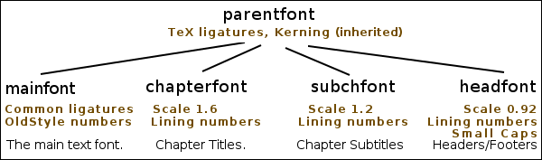
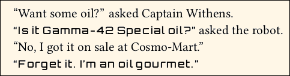
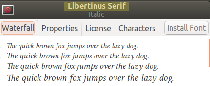
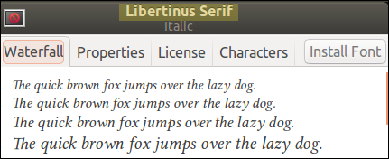
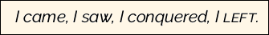

Documentation for novel document class
Documentation version: 1.38.
User Guide
5. Choosing Fonts
9. Display, Start Pages;
Chapters; Continued Pages;
Footnotes, Endnotes.
5. Fonts
This page describes how to choose fonts and font features, and how to apply fonts within your document.
If you are looking for information about how to specify the main text point size, see Page 4.
If you are looking for information about how to change the size of text within the body of your document, or about how to style text (such as italics), then see Page 7.
EEEK! If you are like me, you first try to do something the way you did it before, then when it fails, you finally read the instructions. So, before you came to this page, you tried these things, and none of them worked:
\usepackage{somefont} % FAILS!
\renewcommand\rmdefault{smf} \normalfont % FAILS!
\setmainfont{Some Font} % FAILS!
DON'T PANIC. In novel, the essential fonts are specified with different code. Fortunately, they are all pre-configured. If you accept the carefully-chosen defaults, then you do not need to worry about fonts. You do not even need to specify the font families. Sit back and relax.
Or, you can do something like this, if you have the font license. Then let novel do the rest:
\SetParentFont{Adobe Garamond Pro} % WORKS!
It's that simple. But TeX being what it is, there are complicated ways to customize things. The rest of this page shows you how to do it. You will be using Open Type fonts, or perhaps TrueType fonts. Forget the old Type 1 fonts.
5.1 The Parent Font and Descendants
In novel, you do not directly set the default font, or the main font, or the roman font, or whatever. Instead, you set the parent font. The command:
\SetParentFont[optional,features]{Font Family}
The parent font, or parentfont, is the ancestor of several other fonts, wich will use the same font family unless you manually set them to something else:

The parentfont has TeX ligatures and kerning, applied by default. All of the descendant fonts will also have TeX ligatures and kerning. (Note: TeX ligatures allow you to type `` to get “ and so forth.)
If you specify any optional features for the parentfont, they will automatically be applied to descendants: textfont, chapterfont, subchfont, and headfont.
If you do not set the parentfont yourself, then the following will be used as default, in order of priority: Libertinus Serif, Linux Libertine O, Latin Modern Roman.
The Libertinus Serif fonts are well-suited to fiction. If in doubt, use them. They can be downloaded as TeX libertinus package, but do not write \usepackage{libertinus} in your Preamble. Those fonts are a more up-to-date fork of the Linux Libertine O fonts, which are in the libertine package. Alas, even though Latin Modern Roman is a fine font, its style and weight are not well-suited to fiction; the only reason they are a last-choice default, is because just about every TeX system has them.
Note: In class version 1.0.10 and earlier, the parentfont was known as the masterfont, and the textfont was known as the mainfont. For backwards compatibility, both will work.
5.1.1 Map of Font Positions
The parentfont is not directly used, anywhere in your document. Instead, its descendants are specialized for use in different situations. Here is a typical page spread, using some of the pre-configured choices for chapters and headings:

If you use the novel pre-configured style commands, then the correct font will automatically be applied. That is the recommended, no-brainer method. If instead you choose to write your own custom styles, then you will also need to specify the fonts; but this allows you more TeX coding flexibility.
5.1.2 The Text Font
The text font, or textfont, is the default main font used used for ordinary, flowing text. It uses the parentfont, with added features: common ligatures, and oldstyle numbers.
Common ligatures (the Open Type liga feature) are such things as replacing ff with the single character ff. Oldstyle numbers are designed to blend with surrounding text. Not every font has these features; if they are missing, then whatever the font actually has, is used instead.
Normally, you do not need to call the textfont explicity, because it is the default for ordinary text. But in the event that you have a small passage in textfont, within a passage in some other font, you can do this:
{\textfont text}
Note that {\textfont text} and {\rmfamily text} mean the same thing.
You do not set the textfont itself. It inherits from the parentfont.
5.1.3 The Chapter Title Font
The novel command \ChapterTitle{text} automatically styles its text in the chapterfont.
If you write custom code for chapter titles, then whether or not you use this font is your choice. It is not automatic. If you wish to use it:
{\chapterfont text}
You may customize the chapterfont:
\SetChapterFont[optional,features]{Font Family} % Note command case!
If you do not use the above command to customize the chapterfont, then by default it will be the parentfont with added features: Lining numbers, and 1.6 scale.
5.1.4 The Chapter Subtitle Font
The novel commands \ChapterSubtitle{text} and \QuickChapter{text} automatically style their text in the subchfont.
If you write custom code for chapter subtitles or quick chapters, then whether or not you use this font is your choice. It is not automatic. If you wish to use it:
{\subchfont text}
You may customize the subchfont:
\SetSubchFont[optional,features]{Font Family} % Note command case!
If you do not use the above command to customize the subchfont, then by default it will be the parentfont with added features: Lining numbers, and 1.2 scale.
5.1.5 The Header/Footer Font
The novel pre-configured header/footer layouts automatically style their text in the headfont.
If you write a customer header/footer layout (using fancyhdr syntax), then whether or not you use this font is your choice. It is not automatic. If you wish to use it:
{\headfont text}
You may customize the headfont:
\SetHeadFont[optional,features]{Font Family} % Note command case!
If you do not use the above command to customize the headfont, then by default it will be the parentfont with added features: Lining numbers, and 0.92 scale.
5.2 Other Pre-Defined Fonts
There are also a few pre-defined font commands that are "unrelated to" the parentfont.
5.2.1 Sans and Mono Fonts
You probably do not need a sans-serif or monospaced font in a work of fiction. The most prominent exception might be headers/footers, where the use of a light sans-serif font is fashionable. But in that case, set the headfont to the desired sans-serif font, instead of inheriting from parentfont.
The novel class does not have its own commands for setting or using sans-serif or monospaced fonts. If you wish, you may use ordinary fontspec syntax to set them:
\setsansfont[optional,features]{Font Family}
\setmonofont[optional,features]{Font Family}
Then, you may use them with ordinary LaTeX commands:
{\sffamily sans-serif text}
{\ttfamily monospaced text}
If you do not set these fonts, then the defaults are: Libertinus Sans, or Linux Biolinum O, or Latin Modern Sans for the sans-serif font; Libertinus Mono, or Linux Libertine Mono O, or Latin Modern Mono for the monospaced font.
5.2.2 Math Font: Forget It!
The novel class is not set up to do math. Seriously.
Nevertheless, TeX being what it is, there is a behind-the-secene choice of a math font, which (hopefully) your document will never use. The code automatically looks for Libertinus Math, or Asana-Math, or Latin Modern Math.
Otherwise, there is no special command for choosing a math font, and no special command for using it. Proof left to student.
5.2.3 The Deco Font
The novel class ships with its own custom font, NovelDeco.otf. This Open Type font is specifically designed to provide a number of decorative glyphs, and some other characters. It is not a general-purpose font, and can not be replaced by any other font, except by a modified version of NovelDeco.
The decofont is automatically configured. You do not need to set it. However, if you use a font editor to create a modified version, then your modification must have a different font name (to avoid confusion with the original). In such a rare case, you may point to your modified font like this:
\SetDecoFont[optional,features]{YourDecoFont}
The decofont is automatically called by other commands, such as \decoglyph{} and \acronym{}. Normally you do not request decofont directly. But if you wish to do so:
{\decofont text}
The decorative glyphs in this font (not including its ordinary characters) are shown in file NovelDeco-glyphs.pdf, which can be found in these docs in the extras folder.
5.3 Defining New Fonts
You can define new font commands. The syntax depends on whether the new font is part of a family (where you might have bold and italic variants), or just a single file (no variants). If part of a family, use \NewFontFamily. If alone, use \NewFontFace.
Note that if you define a font family when you should have just defined a font face, there will be complaints in the log file, because the font loaded cannot find the (nonexistent) other members of the family. But the document will compile. On the other hand, if you define a font face when you should have defined a font family, then commands for bold or italic will have no effect, since the other family members were not loaded. Again, the document will compile.
The \NewFontFamily command (or \NewFontFace) takes three arguments: First, the name of the new font command is required. Second, font features are optional. Third, the font name is required.
Example: Suppose your work is science fiction, and one if its characters is a talking robot. You wish to depict its utterances in a robotic-looking font, which will be called using a new \robovoice command. You shop around, and find that the Orbitron font suits your purpose, except that it is too large compared to your textfont. So, you scale it.
In the Preamble, you define the new font command:
\NewFontFace\robovoice[Scale=0.8]{Orbitron} % not part of a family
After some experimentation, you realize that the \robovoice letters need to be spread apart a bit. This is accomplished using the standard LaTeX \textls command.
In the document body:
``Want some oil?'' asked Captain Withens.\par
\textls{\robovoice ``Is it Gamma-42 Special oil?''} asked the robot.\par
``No, I got it on sale at Cosmo-Mart.''\par
\textls{\robovoice ``Forget it. I'm an oil gourmet.''}\par
The result:

Caution: If you are using a new font within body text (as above), then it is a bad idea to use Scale greater than 1.0. Reason: An excessively tall font will cause lines to spread apart.
 Example: Suppose that you wish to style the title of your book, in a font that is not used for other things such as chapter titles. You purchase a license for the Bernhard Modern Std fonts, in Regular and Italic.
Example: Suppose that you wish to style the title of your book, in a font that is not used for other things such as chapter titles. You purchase a license for the Bernhard Modern Std fonts, in Regular and Italic.
In the Preamble:
\NewFontFamily\booktitlefont{Bernhard Modern Std}
The title page, using \charscale for size:
\thispagestyle{empty}
\vspace*{7\nbs}
\begin{center}
\charscale[3]{\booktitlefont The \textit{Fluffy} Conspiracy}\par
\vspace{6\nbs}
\charscale[2]{Priscilla Milde}\par
\vfill
Nonexistent Publications • Portland, Oregon\par
\end{center}
Note: Command \NewFontFamily is identical to \newfontfamily, and command \NewFontFace is identical to \newfontface.
5.4 Font Customization Syntax
You will be using fontspec syntax to select your own fonts. Much of what follows is a digested portion of the full fontspec documentation. There are many more features, and ways to use them, than will be described below.
5.4.1 Font (Family) Name vs. Font File Name
A font file is an individual file, with its own file name, including file extension. For example, libertinusserif-regular.otf and libertinusserif-italic.otf are two different font files. This much is obvious.
A font family name, often merely called font name, refers to one or more font files that are variations of the same basic font. Some fonts are so unique that the family consists of just one file. For example, the NovelDeco font family consists of the one file NovelDeco.otf. Typically, a font family has four files, consisting of Regular, Italic, Bold, and BoldItalic variants. Even though there are four font files, there is a single font family name. Many font families have more than four files, including Semibold and Light weights, and Condensed tracking. It is up to the font designer to decide whether a Condensed variation of the "Bubble Turble" font should be treated as a member of the "Burble Turble" family, or as a separate "Burble Turble Condensed" family.
The font (family) name can be learned by opening font files in your system font viewer. Currently, the Windows 10 font viewer uses "Font name" and the Ubuntu font viewer puts the font name in more prominent type. A font (family) name may contain more than one word, with or without spaces, and may contain a general classification such as serif, sans, or mono, because those are actually different families. But it will not contain words such as regular, medium, semibold, bold, or italic; those are for individual members of the same family. Within TeX, some of the older PostScript fonts have been re-worked as newer TrueType and Open Type fonts. The family names are slightly different, so pay attention.
 

5.4.2 Set/New by Font Name vs. File Name
When you set an existing font, or create a new font command, you can use either the font (family) name, or the specific font file name. However, there may be a big difference in results!
By family name:
 When you use the font family name, you configure all of the Regular, Italic, Bold, and BoldItalic variants. The usual TeX commands will be applied:
When you use the font family name, you configure all of the Regular, Italic, Bold, and BoldItalic variants. The usual TeX commands will be applied:
Preamble:
\NewFontFamily\rway{Raleway}
Document Body:
{\rway I came, \textbf{I saw}, \emph{I conquered}, \textsc{I left}.}
By file names:
 However, if you specify the font file name, then only that font file will be used, regardless of requests for bold or italic. Small caps will be honored, if the specific file has them:
Preamble:
\NewFontFamily\rwayi{Raleway-Regular-Italic.otf}
Document Body:
{\rwayi I came, \textbf{I saw}, \emph{I conquered}, \textsc{I left}.}
File Name Combinations:
 What you write is what you get. You can customize a font family by individually selecting its members. Here is the syntax.
What you write is what you get. You can customize a font family by individually selecting its members. Here is the syntax.
Preamble:
\NewFontFamily\frankenfont[% note the % at linebreaks
ItalicFont=BaskervilleF-Italic.otf,%
BoldFont=libertinusserif-semibold.otf,%
BoldItalicFont=texgyrepagella-bolditalic.otf,%
]{Raleway-Medium.otf}
Document Body:
{\frankenfont I came, \textbf{I saw}, \emph{I conquered}, \textsc{I left}.}
Semibold, Light, etc.: The above syntax is especially useful when you wish to specify semibold (if available), rather than bold. It is also a way to select something such as light versions:
\NewFontFamily\rwlight[% note the % at linebreaks
ItalicFont=Raleway-Light-Italic.otf,%
BoldFont=Raleway-Medium.otf,%
BoldItalicFont=Raleway-Medium-Italic.otf,%
]{Raleway-Light.otf}
Note that the font file in braces is the one used as the "regular" font, in this definition.
5.4.3 Open Type Features
Features are variations, contained within a single font file. In the bad old days, when you wanted true small caps, you had to load a separate font file that had them (and did not have ordinary lowercase letters). Now, if an Open Type font file has the "smcp" feature, you obtain the small caps from within the same file, by asking for them. Requests for the feature may be made on-the-fly, or pre-loaded for global use.
Here are several of the most frequently-used features, relevant to fiction writing. There are many more, and most fonts have only a few of them. Even when a font has a feature, it may be limited to some portion of the characters. For example, it is common for small caps to be available only for Latin-1 letters, even though the font also contains Greek and Cyrillic. To put this another way: The availability of a feature does not tell you its breadth of coverage. Unless the font has documentation showing coverage of its features, the only way to find out is to create and print a test page.
| Description | Open Type code | fontspec code |
|---|---|---|
kerning |
kern |
Kerning=On |
common ligatures |
liga |
Ligatures=Common |
Tex ligatures |
tlig |
Ligatures=TeX |
lowercase letters to small caps |
smcp |
Letters=SmallCaps |
uppercase letters to small caps |
c2sc |
Letters=UppercaseSmallCaps |
lining numerals |
lnum |
Numbers=Lining |
oldstyle numerals |
onum |
Numbers=OldStyle |
• Kerning is the automatic adjustment of spacing between letters, so that they fit together nicely. Common ligatures are substitutions, such as a combined ff character for two consecutive f characters. It is up to the font designer to determine which ligatures, if any, are common.
• TeX ligatures (such as replacing `` with “ and --- with —) are not actually an Open Type feature, but they are treated that way by the software. All of these are enabled by default. The fontspec manual explains how to disable them, if necessary.
• The SmallCaps feature applies only to lowercase letters; ordinary capitals remain ordinary capitals. UppercaseSmallCaps deals only with converting ordinary capitals to small caps. If you want both, use both. In most fonts that have them, small caps are slightly taller than lowercase, and slightly more widely spaced. What distinguishes real small caps from fake ones (obtained by scaling ordinary capitals) is that the weight and spacing are more compatible with surrounding text.

• Lining numerals are the ones most familiar to you, from math or accounting. They sit on the baseline and have the height of capital letters. That's just right for doing calculations, and doesn't look bad for things such as page numbers and chapter numbers.
• When lining numerals are mingled with flowing text, they may stand out too much. OldStyle numerals are more like flowing text: Most of the numerals are at lowercase height, with ascenders and descenders. Compare the first number as OldStyle, the second as Lining:

Most fonts use Lining numerals as their default. A few default to OldStyle numerals. Thus, you should explicitly call for the kind of numerals you wish to use.
• True OldStyle numerals have a flat top on one, and a very round zero:  This may be a bit distracting. Some fonts use a transitional form, where the one has a tilted top (like big 1) and the zero is not so round:
This may be a bit distracting. Some fonts use a transitional form, where the one has a tilted top (like big 1) and the zero is not so round:  Others offer you a choice, via an Open Type "style set." See the
Others offer you a choice, via an Open Type "style set." See the fontspec manual for how to code style sets.
• There are many more Open Type features, most of which are not useful in ordinary fiction writing. Fonts rarely have more than a few features. Some features (such as the ones shown above) have a specific meaning. Other features, such as "style sets", have whatever meaning the font designer assigns them; Thus the "ss03" feature of one font may do something very different from "ss03" in a different font.
5.4.4 Scale as Pseudo-Feature
Although it is not an Open Type feature, Scale=number may be written like a feature. Scale globally adjusts the size of the font, relative to what it would otherwise be. If a local font size command is also applied, then the result is the compounded value.
If the font will be mingled with other fonts in the same place, Scale can tweak a font so that it does not stand out. If Scale does not exceed 1, then the baselineskip will not be affected. Over 1 risks spreading lines to accomodate the extra size; this should not be done for fonts that will appear in the flowing main text. But over 1 is acceptable for display fonts that do not wrap lines and do not mingle with main text.
Example: Orbitron is a special-purpose font with a mechanical or futuristic look. Its characters are much larger and heavier than would be found in book fonts. If I wish to mingle Orbitron with ordinary text, I might load the font like this:
\NewFontFace\orbitron[Scale=0.6]{Orbitron} % Preamble
Then in the document body, I could use it like this, where I have added \textls to spread the letters by a tiny bit:
The message was brief: \textls{\orbitron DIE, EARTHLING.} Captain Withens smiled as he oiled his ray-gun. But ray-guns don't use oil.\par

Scale is more often used for fonts that are pre-defined to have a special meaning and location, such as chapter titles or page headers. There, the font is not mingled with ordinary text, and it is OK to use a larger Scale. Then, it is not necessary to use local font scaling commands each time the font is used.
5.4.5 Color and Opacity
Even though the fontspec syntax allows you to set Color and Opacity as pseudo-features when you define a font, the novel class blocks these features. If you attempt to set them as features in a font definition, an error will result. The same applies if you attempt to add them, using \addfontfeature. However, you can still make use of grayscale using ordinary, local color commands.
When you use the graytext class option, you may write text in grayscale, using commands from the included xcolor package. You should only do this for text that is in special locations. For example, if you begin each chapter with a number that is very large, you might wish to make that number gray, so that it does not overpower the main text.
To avoid possible conflicts, the color specification should be chosen from a limited list of names. In order from dark to light: black, blue, violet, darkgray, purple, red, teal, olive, magenta, gray, brown, green, orange, cyan, lightgray, lime, pink, yellow, white. They will all be rendered in shades of gray (of course, black and white will be themselves). You may also choose from this more convenient list: black, gray1, gray2, gray3, gray4, gray5, gray6, gray7, gray8, gray9, white.
If graytext is not chosen as class option, then any color (even white) will be rendered as black.
5.4.6 \CreateFeature{code}{substitutions}
Once in a while, a font has a glyph that you would like to use, but it is not included in any of the font's Open Type feature sets. So, how to you grab that particular glyph? For example: One well-known font has a glyph named emdash.alt, which is not as long as the font's ordinary emdash glyph, and looks better in text. Unfortunately, emdash.alt is not in any of the font's style sets. Without some trickery, only a program such as InDesign can grab that glyph.
Thanks to the included fontspec 2016 update, novel has the necessary trickery. Command \CreateFeature creates a fake Open Type feature code, and assigns your list of substitutions to that code. Use comma-separated entries if there are multiple substitutions. For the case in question:
\CreateFeature{myem}{emdash=emdash.alt}
The code myem was randomly chosen as something that is not already defined among Open Type feature codes. Once specified, the fake feature may be used in any font definition, such as this:
\SetMasterFont[RawFeature=+myem]{Adobe Garamond Pro}
Of course, the fake feature has no effect if the font does not have the substitution character.
This technique may be used for more complicated features, but that is beyond the scope of this documentation. See the fontspec manual if you need to do more.
5.4.7 Local Modifications to Open Type Features
If you specify a particular Open Type feature, it will be generally used for that font command. So if you define a new font command with Letters=SmallCaps as a feature (and if the font actually has them), then small caps will be used for that font, whether or not you locally request them with a command such as \textsc.
Often, you can add (or sometimes remove) features on a local basis. For example, suppose that you defined the font without using is ss03 style set. You can locally add that feature to some text, using a command that looks like this:
{\addfontfeature{which feature} applied to this text}
The above code assumes that you are already using the font in that location. You cannot apply ss03 from one font to an entirely different font!
See the fontspec documentation for details of \addfontfeature.
As an alternative to changing features locally, you can define different font commands to call the same underlying font, but with different features.
Two ways to accomplish the same thing:
\NewFontFamily\baskf{BaskervilleF}
\NewFontFamily\baskftab[Numbers=Monospaced]{BaskervilleF} % tnum feature
\begin{document}
Some text {\baskftab hello 123} is here.
Some text {\baskf\addfontfeature{Numbers=Monospaced} hello 123} is here.
5.5 Shopping for Fonts
Many TeX fonts are only available in older Type 1 format (PostScript) or even as bitmap metafonts. Do not use them.
In some other cases, a TeX font package provides both the older format, and a newer Open Type (*.otf or *.ttf) format. The different formats will have different font names. Sometimes the difference is very slight. Carefully look at the font name for the Open Type format. Remember that most on-line discussions will refer to the older fonts, simply because they have been around longer.
Do not attempt to load a font by the \RequirePackage or \usepackage commands. Instead, if you choose to use fonts other than the defaults, load them via the font setting commands described on this page.
Update: Now, if you attempt to load a font the wrong way, you will get an error message.
5.5.1 Licensing Issues
Presumably, you are writing your novel for commercial value, and do not intend to give anything away for free. For that reason, avoid fonts licensed under the GPL (GNU Public License) unless it has the font exception clause. Some TeX fonts are licensed under GPL, so watch out.
Beware of fonts "free for personal use" from download sites. Your commercial application is not "personal use." Of course, if you like the font, you may purchase its commercial license.
Also beware of fonts generically labeled as "freeware" with no particular designer name. If you don't know who created the font, then how do you know that it can be given away for free? Even if there is a designer name, some of them had second thoughts about "freeware." They intended the fonts to be free only if you give your own work away for free. But they didn't mention it. Maybe they have no legal recourse, but you don't want them making anonymous negative reviews of your book.
You have numerous fonts already installed in your operating system, and perhaps others that came bundled with a particular application. If you intend to use those fonts, carefully read their licenses. It is often the case that fonts bundled with an application may only be used for documents created within, or processed by, that application.
Always look for a Copyright notice, which can be identified with a particular person or organization. Copyright is good! It means that someone is claiming authorship of the font software. Only the Copyright owner has the right to give the font away for free, or license it to you after payment (often through an intermediary).
If you prefer free fonts, the most widely accepted license is the SIL Open Font License. This allows you to use the font for commercial purposes, embed it in PDF, modify it to suit your needs (if you change the font name), and even re-distribute the modifications.
5.5.2 Technical Issues
Many fonts have technical errors, even among professional fonts. Some of the errors are so minor that they are not worth fixing. This is particularly true for glyphs that are missing extrema.
However, beware of fonts that are based on traced artwork. The late 1990s had an explosion of amateur dingbat and decorative fonts produced this way, by scanning images from old books and digitizing the scan. The resulting vector glyphs rarely meet standards, and often are quite awful. The problem is that when a commercial printer renders your PDF to print, the printer's software is very different from what you have on your home computer. A technically erroneous glyph might look OK at home, but be rejected commercially.
If you have the knowledge, you can open a font in font editor software (such as FontForge) and ask it for validation. Missing extrema are rarely a problem, even if a lot of them are missing. Self-intersecting glyphs are not a problem if the the glyph is composed of two elements stuck together, such as Ç composed of C with separate cedilla. However, a self-intersecting glyph may be a problem if its lines criss-cross each other. Open paths, and outer paths drawn the wrong way, are often a problem. If the errors are confined to glyphs that you will not be using, then it can pass.
5.5.3 Appearance Issues
There are general expectations for book fonts, in terms of character sizes and shapes, and weights. Many of the widely-used TeX fonts, including Latin Modern, are unacceptable in fiction for this reason. The most commonly-used font in word processors, Times New Roman, is only marginally acceptable for fiction, and only because it is so often used by amateur writers who don't know how to change the font (but write books advising you to change your lifestyle).
The best way to assess a font is to print it to paper. Computer screens rarely show details, except at large magnification. Depending on whom you ask for an opinion, fiction is most easily read when there are about 60 to 66 characters (including spaces) per line. To evaluate a font for the main text, print out some paragraphs about 4" to 4.25" wide, and scale the font's point size so that you get an average number of characters per line in that range. Be sure to do that: Adobe Garamond Pro at 12pt, Libertinus Serif at 11.4pt, and Libre Caslon Text at 9.6pt (!) provide about the same number of characters per line of text. At the proper point size, some fonts will look too dark, and others will look too light.
Things to look for: Are the lowercase letters too tall? If they are, then it is hard for readers in many Western languages to find where sentences start, by looking for capital letters. Also, there is less white space between lines, which makes the text appear dense and harder to read. Is the shape of the characters so natural that you don't notice them? That's good! It is your writing, not the font, that is to be noticed. Remember that some fonts are designed for use at large size, in posters; such fonts tend to look mechanical in fiction. Other fonts are designed for computer screens; the letters will be too widely-spaced in fiction. Nearly all modern fonts have decent kerning and important ligatures, so that's not usually a decisive factor.
The prevailing rule: If you notice the font, it's wrong.